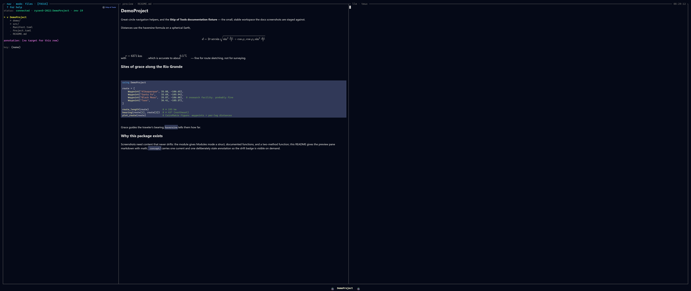

The Preview Pane
Top-right. The preview pane renders whatever the Navigation pane cursor is on, at the fidelity appropriate to its type — markdown rendered, PNGs shown, .jl syntax-highlighted, PDFs paged, video as a poster frame. Nothing is reduced to plain text.

A markdown file with LaTeX blocks — math is typeset (MathJax → SVG), not shown as source.What fills it
Every preview travels one dispatch path: a FileType plugin claims the path with matches and returns a PreviewPayload from preview. The payload's mime tells the frontend which renderer to use; the bytes are opaque to Rust, so adding a format is a Julia-only change. A sampling of the built-ins:
| Kind | Rendered as |
|---|---|
.jl | syntax-highlighted source (tokenized kernel-side, no client re-parsing) |
.md | rendered markdown, including inline math |
.json / .toml / .txt | plain text (JSON/TOML pretty-print / colour planned) |
.pdf | one rasterized page; n / p turn pages |
video (.mp4, .webm, …) | a poster frame; o opens playback in the browser |
The full table — every built-in type and its MIME — is on the Previews page.
Beyond static rendering
- Opens in the browser, not the pane. Interactive HTML, Pluto notebooks, and Quarto documents pop out to the OS browser over a forwarded port rather than rendering in-pane; the source still previews as text. Same policy as video.
- Capture a region for the LLM. On a raster image you can crop a zoomed region and hand it straight to the orchestrator — "what's the artifact here?". The crop is taken from the source image on the backend, so the agent sees exactly what you do.
- No silent blanks. When an external tool is missing (ffmpeg, poppler), the plugin returns a
text/markdownnote explaining the gap instead of an empty pane.
See also
- Previews — the full built-in file-type table and the browser pop-out policy.
- Writing a FileType Plugin and The Dispatch ABI — teach the pane a new format with no Rust change.
- The REPL — figures from the REPL render through this same preview layer.